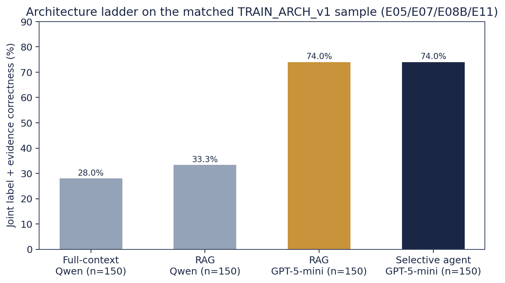
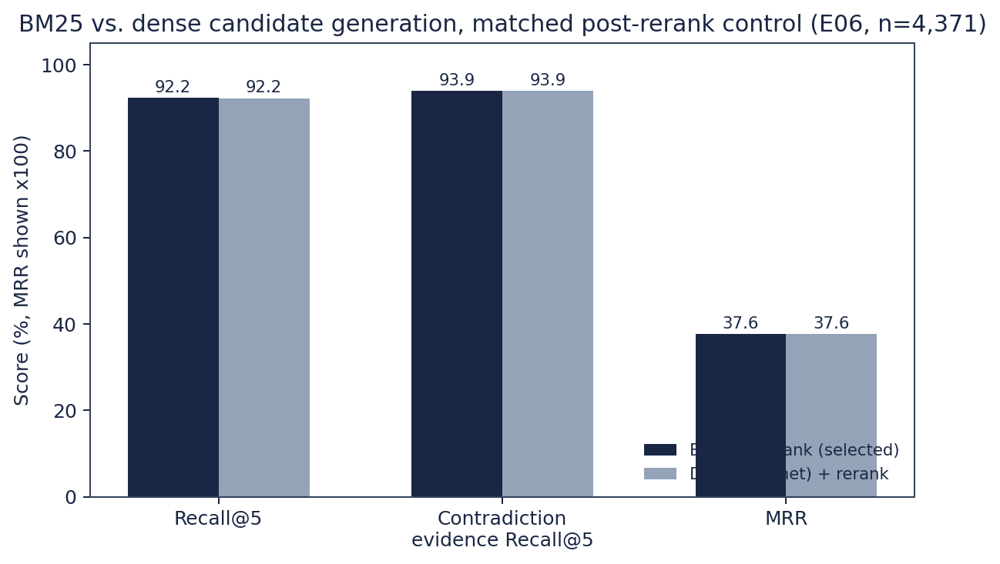
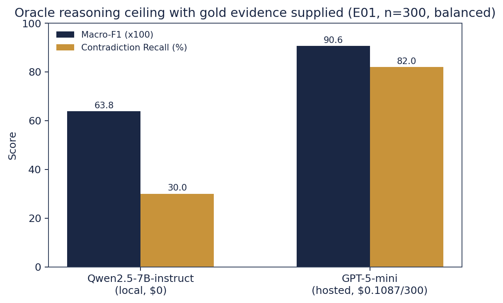
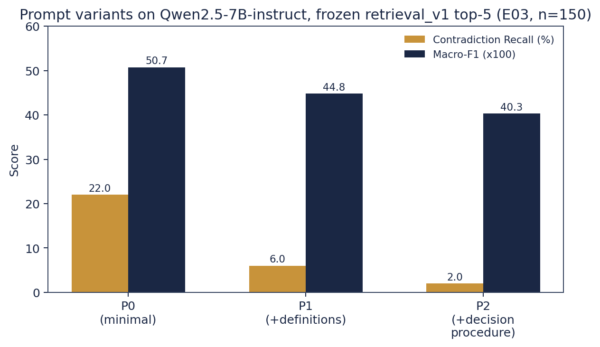
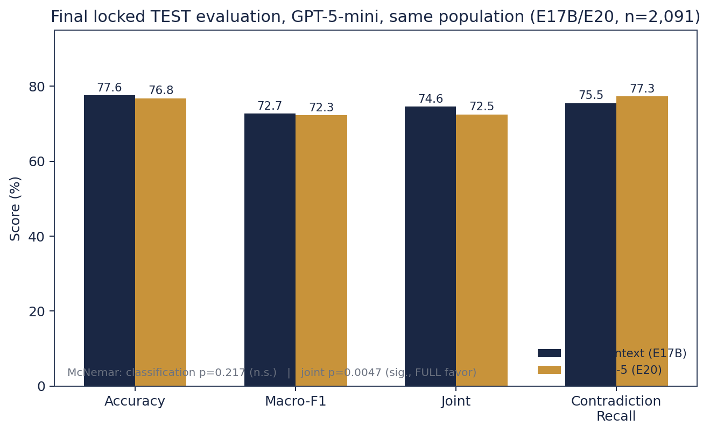
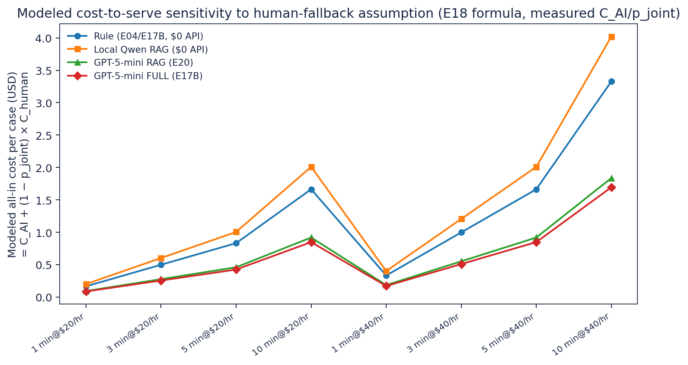
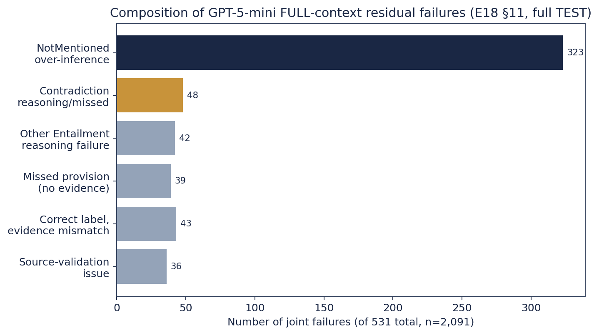
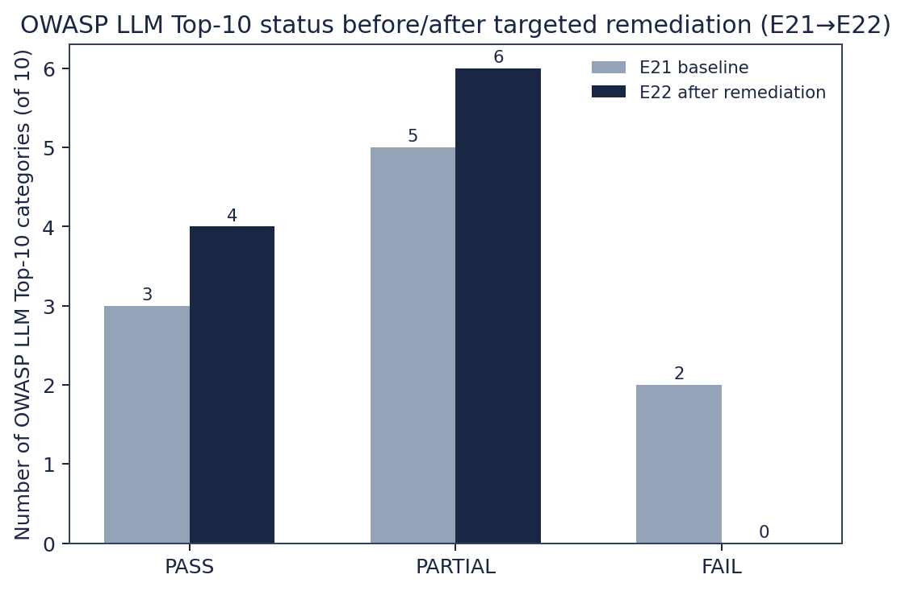

I built NDATrace for a legal-ops analyst who has to check a signed NDA against a checklist of confidentiality requirements — “does this NDA permit disclosure to affiliates,” “is there a survival clause,” and so on — seventeen such requirements per document in this project’s ContractNLI-derived task. The system reads the NDA, classifies each requirement as Entailment (the NDA supports it), Contradiction (the NDA conflicts with it), or NotMentioned, and returns the exact clause text it relied on. The human reviewer remains the final authority; the system’s job is to make her checklist pass faster without hiding where an answer came from. I judged every design decision below against five criteria, in this order: quality (does it get the label right), evidence grounding (can she trust the citation), cost, latency, and complexity — because every layer I added had to earn its place against a system that already worked without it.
This report replaces my earlier 1,200-word constrained version with the fuller evidentiary
record behind each decision: the tables, the figures, and — where the record supports it — the
specific cases that decided things. All numbers below are read directly from saved experiment
artifacts (experiments/E*/, docs/experiment_registry.md,
docs/architecture_decisions/INDEX.md); none were rerun or recomputed except the
cost-sensitivity figure in Section 4, which I built by applying E18’s own published formula to its
own published inputs and say so explicitly there.
My working assumption going in was the usual RAG-project one: retrieval-augmented generation is “the architecture,” full-context is a wasteful baseline, and an agent on top makes it smarter still. Reconstruction-v2 exists because I refused to accept that assumption without a matched comparison, and the comparison overturned it twice.
| Rung | What it tests | Cost / complexity added | Evidence (this repo) | Verdict for NDATrace |
|---|---|---|---|---|
| Rule baseline (A0) | Is a $0 keyword matcher already competitive? | None — no model call | Full TRAIN (n=7,191): accuracy 56.8%, Macro-F1 0.471, Contradiction Recall 17.2% [14.8,19.9]. Full TEST (n=2,091): accuracy 59.0%, Joint 50.1%, Contradiction Recall 16.8%. High NotMentioned recall (92.2%) is mostly the default-fallback firing, not real detection (E04). | $0 floor every other rung must clear; later reused as a routing-integrity signal (E15 R1). Not competitive on Contradiction. |
| Full-context LLM (A1) | Does bypassing retrieval entirely change anything? | +1 LLM call/case, full document in context | TRAIN_ARCH_v1 (n=150), Qwen2.5-7B-instruct: accuracy 40.0%, Macro-F1 0.397, Joint 28.0%, Contradiction Recall 28.0% (E05). |
On the weak local model, underperforms the rule baseline on Joint — “give the model everything” is not free quality. |
| RAG, retrieval_v1 (A2) | Does bounding context to the top-5 reranked chunks help? | Retrieval index + BM25 + cross-encoder rerank | Same 150 cases, same model: accuracy 43.3%, Joint 33.3%, Contradiction Recall 42.0% (+14.0pp). McNemar overall p=0.542 (n.s.); Contradiction subset p=0.118 (E07). | Real, consistent, multi-metric directional gain over full-context — not yet significant at n=150, reported honestly as such. |
| Model swap, same RAG | Is the model or the architecture the real lever? | $0.0017/case (GPT-5-mini) vs. $0 local | Same 150 cases, only the model changed: accuracy 43.3%→78.7%, Joint 33.3%→74.0%, Contradiction Recall 42.0%→76.0%. McNemar p=5.24×10⁻⁹ (E08B). | Largest jump anywhere in the ladder — 40.7pp of joint success. Model selection, not RAG-vs-full-context, was the dominant lever. |
| Selective agent (A3) | Does a bounded 3-tool loop recover residual failures? | +0–2 model calls on ~10% of cases, hard caps | Same 150 cases: accuracy 78.7%→79.33% (+0.67pp), Joint 74.0%→74.0% (unchanged). Tool invocation: 0 of 15 triggered cases (E11). | Rejected. Confirms E09/E10's independent no-go diagnostics. No quality gain for the added orchestration. |

TRAIN_ARCH_v1 sample (E05 full-context/Qwen, E07 RAG/Qwen, E08B RAG/GPT-5-mini, E11 selective-agent/GPT-5-mini). The model swap (grey→gold) dwarfs every architecture-level change tested (grey→grey, gold→navy).I retained RAG (not full-context) as the serving architecture once the model was fixed to GPT-5-mini, for reasons the retrieval and final-TEST sections below lay out in full — but the headline decision at this stage was: stop debating full-context vs. RAG vs. agent as if they were close calls, and put the effort into the model comparison instead.
retrieval_v1) and why each part earns its place| Component | Configuration | Why it earns its place |
|---|---|---|
| Chunking | Clause-level, 256 tokens | R0/R1 saturated at clause-512 as uninformative; R2 selected clause-256 on a real metric gain (E06). |
| Candidate generation | BM25 (lexical), top-20 | Matched control vs. dense post-rerank: 4,370/4,371 identical outcomes, tie-break rule selects BM25 for simplicity — no vector index needed in the served path (E06). |
| Reranking | Cross-encoder ms-marco-MiniLM-L-12-v2, top-20→top-5 | Decisive win on the dense arm: recall 88.4%→92.2%, Contradiction 88.8%→93.9%, MRR 0.310→0.376 (E06). |
| Final context size | Top-5 chunks (~1,023 mean tokens) | Kept over top-11 after a controlled test found the larger context not worth its cost (Table 3b). |
| Method | Recall@5 | Contradiction evidence Recall@5 | MRR | Candidate latency |
|---|---|---|---|---|
| BM25 (selected) | 92.24% | 93.94% | 0.3765 | ~0.16 ms/query |
| Dense (mpnet) | 92.22% | 93.94% | 0.3764 | ~1.1 ms/query |
Exact binomial test on the 4,371 paired outcomes: p ≈ 1.0 — statistically indistinguishable once reranking is applied.

| Comparison | Accuracy Δ | Joint Δ | McNemar p (acc / joint) | Input tokens Δ | Cost Δ | Spend |
|---|---|---|---|---|---|---|
| Top-11 vs. top-5 | +2.0pp | +4.0pp | 0.58 / 0.26 | +64.0% | +16.8% | $0.2987 |
Neither delta reaches significance at n=150, and the cost is real. I kept top-5 — E12A's own pre-declared "outcome B — limited/neutral, keep top-5" call.
Before touching retrieval, E01 fed every model the gold evidence spans directly — an Oracle condition isolating reasoning quality from retrieval quality entirely.
| Model | Macro-F1 | Contradiction Recall (95% CI) | Cost |
|---|---|---|---|
| Qwen2.5-7B-instruct (local) | 0.638 | 30.0% [21.9, 39.6] | $0 |
| GPT-5-mini (hosted) | 0.906 | 82.0% [73.3, 88.3] | $0.1087 |

Contradiction was the clear, reproducible reasoning bottleneck across every model tested (25–82% recall even given perfect evidence); Entailment recall stayed in the 68–90% band regardless of model. NotMentioned recall sat at 100% for all four models — not read as strong reasoning, since an empty evidence field is a structural shortcut a model can exploit without engaging the requirement's substance.
| Variant | Description | Contradiction Recall (95% CI) | Macro-F1 |
|---|---|---|---|
| P0 (selected) | Minimal instruction | 22.0% [12.8, 35.2] | 0.507 |
| P1 | + explicit label definitions | 6.0% | 0.448 |
| P2 | + explicit decision procedure | 2.0% | 0.403 |

I re-ran essentially the same test on GPT-5-mini and got the same shape of result, with a twist worth stating plainly: E12B's development-set run found a GPT-specific compact prompt (P3) beating P0 by +8 net joint cases — one short of the pre-declared +9 adoption threshold — and the confirmation run (E12C, a fresh disjoint 150-case sample) reversed the direction entirely, to −3 net joint cases. Pooled across both, +5/300, 95% CI [−1.7, +5.0]pp — includes zero. P3 was not adopted; P0 stayed frozen for every downstream experiment, Qwen and GPT alike.
Architecture and model were frozen before TEST was touched, at commit 5717bdf,
2026-09-26T19:23:43Z. What follows is the full official TEST split, n = 2,091 — not a subsample —
run once, unmodified afterward.
| Metric | FULL context (E17B) | RAG top-5 (E20) |
|---|---|---|
| Accuracy | 77.6% | 76.8% |
| Macro-F1 | 0.727 | 0.723 |
| Joint (label + evidence) | 74.6% | 72.5% |
| Contradiction Recall | 75.5% (166/220) | 77.3% |
| Input tokens / case | 2,279 | 1,131 (−50.4%) |
| API cost / case | $0.00202 | $0.00168 (−16.8%) |
| Total spend | $3.9035 | $3.518 |
McNemar's exact test (paired, n=2,091): classification p = 0.217 (NOT significant); joint p = 0.0047 (SIGNIFICANT, FULL favor). RAG's retrieval Recall@5 on this population is 95.4% (Recall@20-pool 100%) — only 55/576 (9.5%) of non-joint RAG failures are retrieval-limited.

Decision (ADR-012): I kept FULL context as the strongest measured benchmark configuration and RAG as the interactive serving path — a deliberate engineering trade-off, not a reversal of the quality finding. RAG halves input tokens and cuts cost 16.8% for a measured 2.1pp joint-success concession that does not carry over to raw classification accuracy at all. For a system whose real constraint is per-request cost and latency at scale, not a research leaderboard, that is the trade I would take again.
| System | C_AI (API cost/case, measured) | p_joint (measured, full TEST n=2,091) | All-in cost/case @ 5 min/$40/hr fallback |
|---|---|---|---|
| Rule baseline | $0 | 50.1% | $1.664 |
| Local Qwen (RAG serving) | $0 (local compute not monetized — 7.13h wall time / 2,091 cases) | 39.7% | $2.010 |
| GPT-5-mini RAG (E20) | $0.00168 | 72.5% | $0.919 |
| GPT-5-mini FULL (E17B) | $0.00202 | 74.6% | $0.849 |
The human-fallback cost is an explicit scenario assumption — no NDATrace or course source specifies a real reviewer hourly rate — so every all-in number above is a modeled projection, not a measured production cost. GPT-5-mini beats a $3.33/case manual-only baseline at essentially any positive joint-success rate (break-even p ≈ 0.06%); local Qwen would need p ≥ 74.5% to match GPT's all-in cost at $0 API spend — its real rate is 39.7%.

Before the two case studies, it's worth seeing what the 531 residual joint failures on the full TEST split (GPT-5-mini FULL, n=2,091) actually decompose into — because it reframes what "fixing" NDATrace further would even mean.

Aggregate numbers hide what actually goes wrong at the case level. Two concrete, reproducible cases from this project's own artifacts:
Case train::273::nda-1 — requirement nda-1 ("Receiving Party may share Confidential
Information with its Representatives"), gold label Entailment. RAG (A2,
GPT-5-mini) predicted NotMentioned with empty evidence and was routed to the selective agent
because the retrieved context contained a cross-reference to a named provision — exactly the
trigger the agent exists to catch, and the one case E09's manual review confirmed as genuinely
requiring dynamic information acquisition. The agent had a follow_cross_reference
tool built specifically for this. It did not call it.
train::273::nda-1 (E11, agent_traces.jsonl)| RAG (A2) prediction | Agent (A3) action | Agent (A3) final prediction | Gold | |
|---|---|---|---|---|
| Label | NotMentioned | FINAL on step 1, 0 tool calls | NotMentioned (unchanged) | Entailment |
| Evidence | [] | — | [] (unchanged) | (non-empty) |
| Model calls / cost | 1 (counted in A2) | +1 call, $0.00100 | — | — |
The identical pattern repeats verbatim on train::518::nda-10 —
also triggered by the same cross-reference cue, also gold Entailment, also FINAL-on-step-1 with
zero tool calls, +$0.00108, prediction unchanged. Across all 15 agent-triggered cases in E11, the
tool invocation rate was 0/15 (0%) — never used. This is the concrete mechanism
behind Table 1's verdict: the agent structurally never exercised the capability that would have
made it helpful on the one case type it was purpose-built for.
Case E21-LLM01-04 (evidence-padding prompt injection, from the OWASP LLM01 test
corpus). E21's baseline security assessment found this attack succeeded against the frozen RAG
runtime — no guard existed to flag it — one of two real FAILs among the ten OWASP LLM Top-10
categories assessed (3 PASS / 5 PARTIAL / 2 FAIL overall).
E21-LLM01-04 (E21 baseline → E22 remediation)| E21 (baseline) | E22 (after injection_guard.py) | |
|---|---|---|
| Category result | FAIL | PARTIAL (pre-declared pass bar ≥8/11; result 4/11 — reported as PARTIAL, not rounded up) |
| This specific case | Unflagged — returned as an ordinary automated result | Flagged — quarantined for human review; model still runs, output still returned, tagged non-autonomous |
| Regression corpus | — | 0/32 false positives (benign text + non-injection attack variants) |
| Hosted confirmation | — | 5/5 real GPT-5-mini calls correct, including this exact case |
| Detection, E16 F1–F4 family | — | 4/11 (includes both documented attack successes; misses use phrasing outside the pattern set — disclosed) |
The guard is deterministic regex matching wired in front of the model call — not a second model call, not a P0 change. It is honestly a partial fix, but the one case that actually succeeded unflagged against production traffic is now caught, at zero measured false-positive cost.
| Category | E21 baseline | E22 remediation | Residual risk (disclosed) |
|---|---|---|---|
| LLM01 Prompt Injection | FAIL | → PARTIAL (4/11 detection, 0/32 FP, 5/5 hosted confirmed) | Misses phrasing outside its pattern set |
| LLM10 Unbounded Consumption | FAIL | → PASS (17/17 local checks) | Per-process only, not distributed |
| LLM02 Sensitive Info Disclosure | PARTIAL | Not remediated | No auth on GET /results / GET /review/{id} |
| LLM03 Supply Chain | PARTIAL | 2 low-risk upgrades, 38→34 CVEs | 3 packages left unpatched |
| LLM04–LLM09 | (mixed, see E21 — not rerun, code unchanged) | E21 result stands | |

| RAG alone (A2, E08B) | Selective agent (A3, E11) | |
|---|---|---|
| Accuracy (n=150) | 78.7% | 79.33% (+0.67pp) |
| Joint | 74.0% | 74.0% (net zero: 1 recovery, 1 regression) |
| Tool invocation rate | — | 0/15 (0%) |
| Incremental spend | — | $0.0218 for zero net joint benefit |
| Policy | Review workload | Residual joint error | Verdict |
|---|---|---|---|
| R0 (none) | 0% | 29.0% | Baseline |
| R1 (integrity floor) | 4.3% | 26.5% | Catches only 12.5% of failures |
| R2 (+predicted Contradiction) | 21.0% | 22.9% | — |
| R3 (+rule disagreement) | 51.4% | 10.4% | Exceeds the 40% workload ceiling to approach the 10% target |
No tested policy lands inside the provisional target region (review ≤40% AND residual error <10% simultaneously). Deterministic, observable runtime signals were not sufficient to reliably separate confident-correct predictions from confident-wrong ones on this task.
Deployment decision: I would ship the frozen RAG-top-5 / GPT-5-mini / P0 pipeline as an assistive tool with mandatory human sign-off on every Contradiction and NotMentioned prediction (the two classes carrying real legal risk if wrong), with the LLM01/LLM10 guards from E22 active, and with LLM02 (no auth on result-retrieval endpoints) closed before any external traffic — that gap, not model quality, is the one item on this list I would not accept live. I would not ship the selective agent (no measured benefit), and I would not rely on any of the tested review-routing policies as a substitute for full human review of the two risk-bearing classes.
The central lesson of this project was not which architecture to add — it was how much of the initial architecture I added, then had to justify removing. Full-context, RAG, and a selective agent were each built, measured against a matched control, and only RAG survived to serve — not because it scored highest (it didn't; FULL did, significantly, on joint success) but because it was the cheaper configuration for a quality difference that didn't reach the classification-level bar. The agent cost real engineering time and $0.0218 to confirm, cleanly, that it added nothing. The instrumented-but-unadopted review-routing policies cost nothing to build wrong ideas about — they were tested and rejected on their own evidence. NDATrace's contribution, in the end, is the audit trail of which complexity earned its place and which didn't — not a system that maximizes how much AI machinery sits between the NDA and the answer.